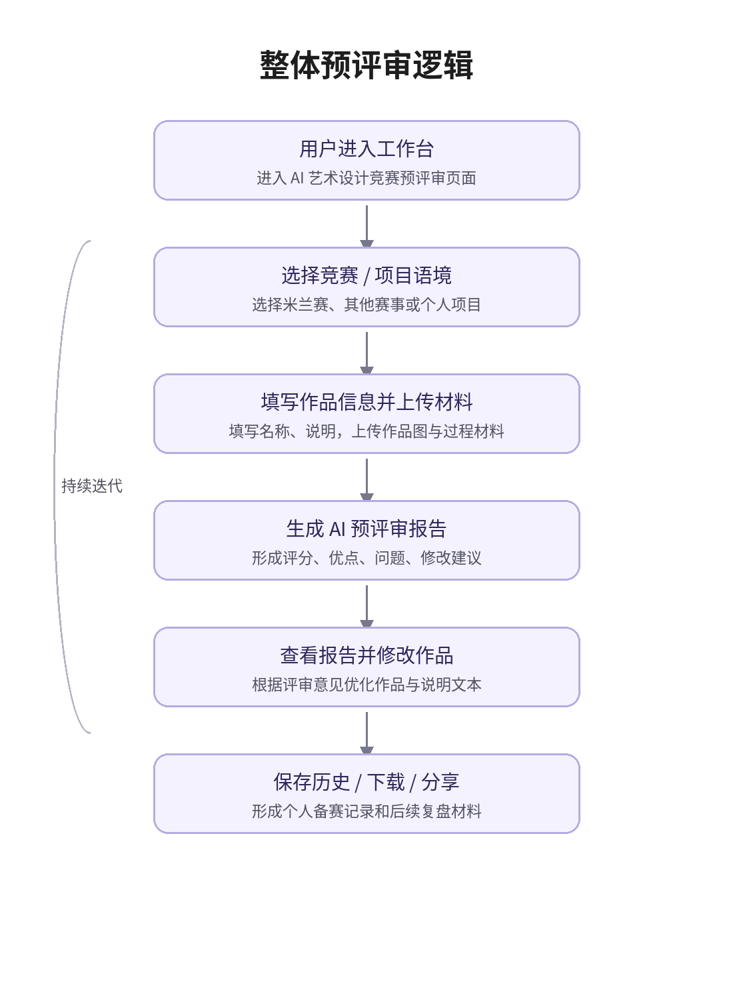

智能预评审
一个基于原生 HTML、CSS、JavaScript 的静态产品 Demo，用于展示艺术与设计作品从材料上传到 Mock 智能预评审报告生成的工作台流程。

当前版本边界
已实现
静态工作台闭环
已覆盖项目类型选择、作品信息填写、多文件上传、缩略图预览、Mock 报告生成、历史记录和主题切换。
部分实现
AI 对话
当前仅追加固定模拟回复，不连接真实模型，也不会读取当前报告或上传图片上下文。
未接入
真实大模型 API
当前没有后端服务、没有 API key、没有真实网络请求。真实模型能力属于未来版本。
规划中
产品化补齐
设置中心、报告目录、完整历史回访、程序化 PDF、搜索结果等能力尚未接入。
主流程
- 选择竞赛项目、竞赛方向或个人项目语境。
- 填写作品名称、作品说明；个人项目可补充作品要求。
- 上传作品图片、多文件材料或过程材料。
- 点击生成预评审报告，读取本地 Mock 数据生成结构化报告。
- 查看综合分、维度评分、主要优点、主要问题、修改建议和提交前检查清单。
- 通过分享链接、Markdown 下载或打印入口保存报告。
